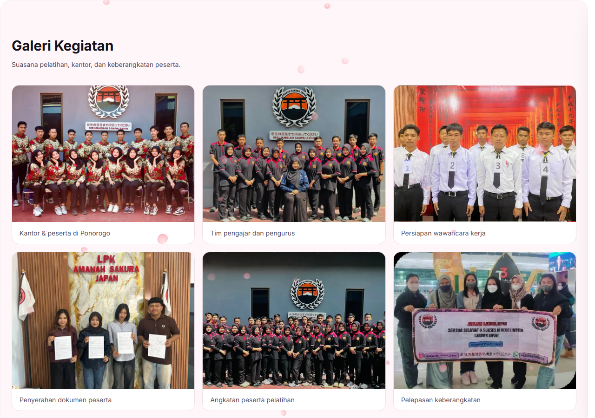
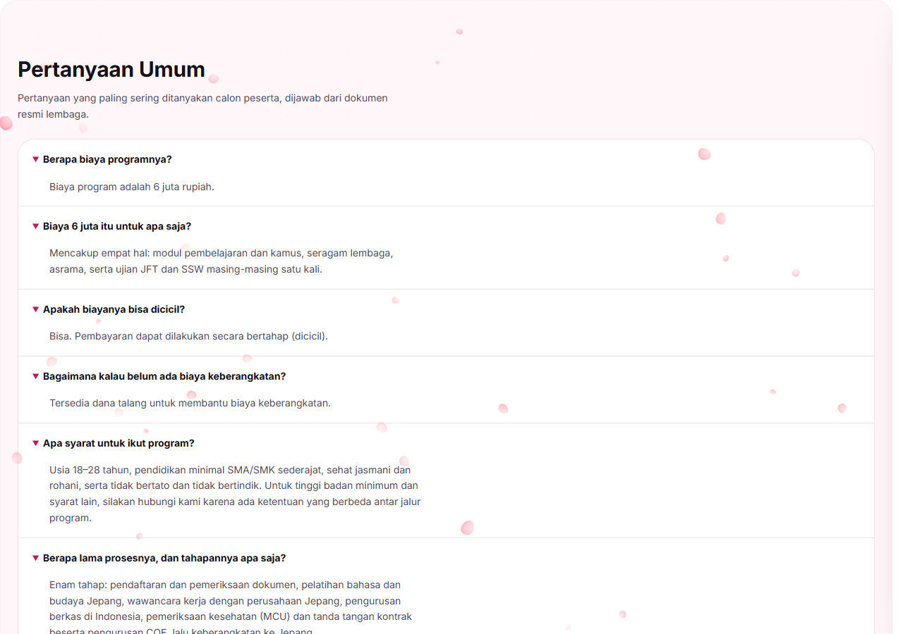
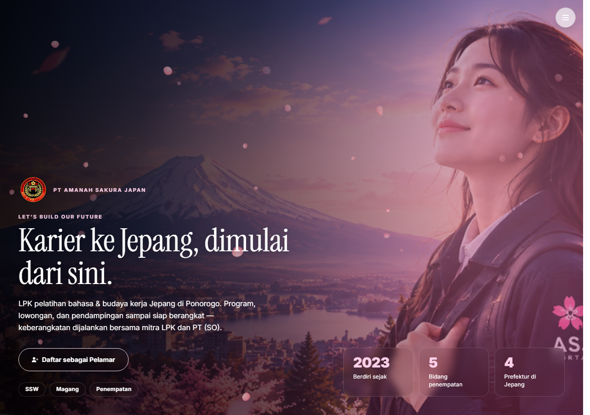
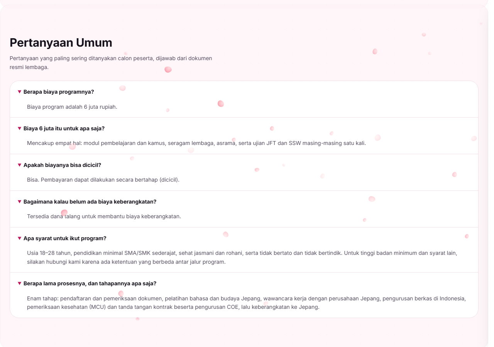
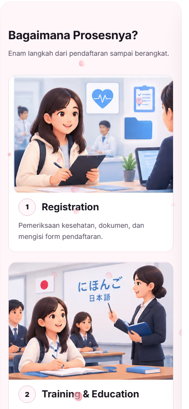
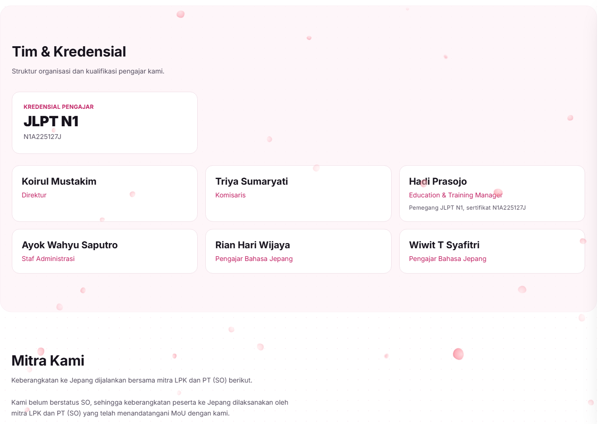

Audit terukur · read-only
/Diukur 2026-09-30 · Chromium headless atas build produksi segar · nol baris src/ disentuh
Perbaikan A–D dari docs/COMPANY_PAGE_ASSESSMENT_2026-09-29.md berhasil: HTML terkirim
sekarang 46,8 KB gz, dan semua disiplin yang dijaga gate e2e — kontras, lantai font 11 px,
lantai sentuh 44 px, overflow, satu kontainer — terukur bersih.
Yang tersisa bukan lagi markup: halaman ini 2,4 MB, dan 85 %-nya gambar.
| Sebelum | Sesudah | Δ | |
|---|---|---|---|
| Berat @1280 DPR1 | 2.481,2 KB | 1.683,4 KB | −797,8 KB (−32,2 %) |
| Berat @390 DPR2 | 2.740,2 KB | 1.942,4 KB | −797,8 KB (−29,1 %) |
| · gambar | 2.116,0 / 2.375,0 KB | 1.318,2 / 1.577,2 KB | −797,8 KB |
| · JS / font / HTML / CSS | 173,5 / 116,2 / 46,8 / 28,8 | tidak berubah | 0 |
| Request | 67 | 66 | −1 |
| Ukuran baca jawaban FAQ | 1.173 px | 574 px | −599 px |
| Padding kartu @1280 | 24px×24 vs 20px×19 | 24px×43 | satu nilai |
| Elemen pada bobot 500 | 13 | 0 | muka 500 memang tidak dimuat |
| Elemen pada bobot 600 | 1 | 14 | muka 600 akhirnya terpakai |
Yang dikerjakan: 13 gambar lokal di-encode ulang ke lebar tampilnya (−732,5 KB) ·
logo header berhenti hotlink dari Supabase, pindah ke berkas lokal yang sudah ter-commit (−65 KB, −1 request) ·
measure jawaban FAQ dibatasi · md:p-6 di 4 tempat · font-medium → font-semibold.
Gate sesudahnya: typecheck exit 0 · lint-ratchet PASSED (−15) ·
verify-assets PASS · gallery.test.ts 13/13 · e2e:landing / e2e:headings /
e2e:aria-names (40/40) / e2e:contrast (0 di bawah lantai) semuanya hijau ·
suite vitest penuh 4 merah / 2021 lulus — sama persis dengan baseline (dikonfirmasi dengan
--testTimeout=180000; dua timeout indexer di lintasan pertama adalah kontensi CPU, hilang saat ambang dinaikkan).


Yang di bawah ini adalah keadaan 2026-09-30 pagi, sebelum polish. Semua diukur, bukan diperkirakan. Berat = CDP Network.loadingFinished.encodedDataLength, jadi ia menghitung apa yang benar-benar lewat kabel. Angka sesudahnya ada di blok hijau di atas.

| Pemeriksaan | Hasil | Catatan |
|---|---|---|
| Elemen kontras di bawah lantai WCAG | 0 | dua tema, dua lebar |
| Teks < 11 px | 0 | terkecil 11 px (3 elemen) |
| Target sentuh < 44 px | 0 | — |
| Overflow horizontal | 0 | diukur dengan motion dinetralkan |
| Console error | 0 | dua tema, dua lebar |
| Jumlah kontainer | 1 | tepi {24:23, 25:24} · lebar {1215:22, 1217:19} |
| Outline heading | OK | H1 → H2 → H3 → H4, tanpa lompatan |
Dua sebab berbeda, keduanya terukur:
(a) Galeri — berkas 1x kelebihan piksel 4×. GalleryGrid.tsx merender
width={item.width} = 1600 px ke dalam tile 394 px @1280. <picture>
memang ada (15 buah, 30 <source>) tapi deskriptornya 1x/2x — jadi yang
menentukan bobot adalah berkas 1x itu sendiri. Enam berkas fasilitas-* = 1.002 KB
(234 · 196 · 178 · 174 · 131 · 88). Terukur 15 gambar dikirim ≥ 2,2× piksel yang dipakai; terburuk
logo-removebg-preview.webp (500 px untuk 64 px = 7,8×).
(b) Banner Layanan dari Supabase Storage. LayananSection.astro:31,114,150 memakai
<img> polos ke …supabase.co/storage/v1/object/public/asj-files/assets/… — tanpa
<picture>, srcset, atau sizes. Tiga banner = 436 KB, dan
verify:assets tidak melihatnya karena gate itu hanya membaca public/.
Tindakan: encode ulang pada lebar tampil sebenarnya + satu varian @2x, dan pindahkan
tiga banner ke public/assets/. Target: −1,3…−1,6 MB (52–64 % halaman).
Dari 173,5 KB JS, 56,5 KB (32,6 %) adalah supabase.DC7Wx9gg.js. Halaman profil
perusahaan tidak memerlukannya; ia terbawa rantai impor apiClient.
Tindakan: lacak pengimpornya (idx:impact) lalu jadikan import() dinamis.
Target: −56,5 KB.
FaqList.tsx merender jawaban sebagai <p> tanpa batas lebar, di dalam panel
selebar kontainer. Terukur: 6 jawaban, 1.173 px, terpanjang 265 karakter, pada 14 px.
DESIGN.md §3.3 membatasi kalimat body 15–20 kata.
Tindakan: batasi measure (max-w-[65ch]).

DESIGN.md §3.5 mewajibkan 1,25 rem (20 px) di mobile dan 1,5 rem (24 px) ≥ 768 px,
dan wajib sama untuk semua kartu.
| Nilai @1280 | n | Komponen |
|---|---|---|
| 24px/24px | 24 | IconTileGrid.tsx:85, StepList.tsx:54 — benar (p-5 md:p-6) |
| 20px/20px | 19 | PersonGrid.tsx:52, PartnerGrid.tsx:61, ReviewGrid.tsx:65, index.astro:1075 — hanya p-5 |
Tindakan: tambahkan md:p-6 di keempat tempat itu.
font-medium (500) dipakai 13×, muka 500 tidak pernah dimuatDESIGN.md §3.3: bobot yang boleh dipakai adalah 400, 600, 700, 900.
Lima berkas font yang benar-benar diunduh: Inter 400/600/700/900 + Instrument Serif 400 —
tidak ada 500. Tiga belas elemen meminta 500, aturan pencocokan CSS menjatuhkannya ke
400, sehingga penekanannya hilang tanpa peringatan.
LayananSection.astro:134 dan :170 (6 + 6) · PersonGrid.tsx:63 (6 peran tim) · index.astro:503.
Ini kelas cacat yang sama dengan T-03 (800), yang repo ini sudah temukan dan perbaiki — 500 lolos karena tidak ada gate yang membaca bobot yang benar-benar di-render.
Tindakan: ganti ke 600 atau 700. Jangan menambah muka 500.
Sensus bobot di seluruh /: 400×149 · 500×13 · 600×1 ·
700×130 · 900×17. Satu-satunya teks 600 adalah copyright footer 12 px
(text-caption font-semibold).
Tindakan: putuskan bersama P5 — kalau P5 pindah ke 600, angka ini berubah.
Ritme vertikalnya sudah benar — py-14 md:py-20 (56/80 px) adalah satu nilai untuk
semua section, sesuai §3.5. Jadi ini jumlah isi, bukan cacat spasi.
| Section | @1280 | @390 |
|---|---|---|
| alur | 1.503 | 3.194 |
| layanan | 1.626 | 2.566 |
| galeri | 1.326 | 2.771 |
| kontak | 1.530 | 1.505 |
| penempatan | 1.415 | 813 |
| tentang | 1.245 | 2.085 |
alur setinggi 3.194 px di ponsel (3,8 layar untuk satu section) adalah kandidat terkuat,
dan pola <details> yang sudah dipakai FAQ tersedia.

alur di ponsel: 3.194 px, atau 3,8 layar untuk satu section.Terpisah dari desain, tapi menjelaskan satu ketidakkonsistenan yang akan membingungkan siapa pun yang mengukur ulang.
astro build gagal di cleanServerOutput, jadi astro:build:done tidak pernah jalanShim safe-delete harness menolak menghapus 76 berkas dist/pages/*.mjs. Karena
cleanServerOutput berjalan sebelum astro:build:done:
[asj:strip-html-comments] tidak pernah jalan. Terukur: dist/index.html hasil
build biasa = 57 blok komentar / 19.862 B — sedangkan fungsi stripComments yang sama,
dijalankan atas berkas itu, membuang 19.862 B dan menyisakan 2 blok. Jadi temuan A dari laporan
2026-09-29 tidak aktif di artefak lokal: bukan karena kodenya salah, tapi karena hook-nya tidak dipanggil.build-sw-manifest.mjs juga tidak jalan (&& setelah build yang exit ≠ 0),
sehingga manifest service worker lokal tidak pernah diperbarui.npm run build
[safe-delete][SAFE_DELETE_BULK_CONFIRM_REQUIRED] {"count":76,"threshold":50,
"targets":["E:\\astro\\dist\\pages\\404.astro.mjs"]}
at cleanServerOutput (astro/dist/core/build/static-build.js:275)
CODEBUDDY_SAFE_DELETE_ENABLED=0 npm run build
[asj:strip-html-comments] stripped 53129 B of HTML comments from 11 page(s)
[build] 11 page(s) built in 32.84s
[build] Complete!
[sw-manifest] precache : 87 URLs
EXIT=0
Ruang lingkupnya jujur: ini artefak harness lokal, bukan Netlify — build di CI tidak melewati shim ini, jadi produksi kemungkinan besar baik-baik saja. Yang rusak adalah kemampuan memverifikasi A secara lokal.
Dua angka yang muncul di lintasan pertama tidak masuk laporan ini, karena keduanya keyframe animasi, bukan tata letak.
| Terukur di scroll 0 | Kenyataan |
|---|---|
| “4 tepi kiri (21/22/24/25), 2 section meluber 3–5 px” | scroll-tilt-y/scroll-drift-y memakai animation-timeline: view(); band di
bawah lipatan memang duduk di keyframe from:
matrix(0.999976, -0.00698126, 0.00698126, 0.999976, 0, -8) = rotate 0,4° + translateY(−8 px),
persis --scroll-tilt: 0.4deg di motion.css:1468 |
“2 section masih ter-transform setelah is-entered” |
Setelah di-scroll masuk viewport: matrix(1, 0, 0, 1, 0, -0.067) → identitas. Bukan sisa animasi. |
Diukur ulang dengan prefers-reduced-motion: reduce: tepi kiri
{24:23, 25:24} @1280 dan {16:23, 17:24} @390, overflow 0 — satu kontainer, sesuai §4.1.
Ini ketiga kalinya repo ini tertipu oleh pembacaan yang mengambil nilai sebelum subjeknya diam, jadi saya mencatatnya
alih-alih menghapusnya.

| # | Tindakan | Dampak terukur | Biaya | Risiko gate |
|---|---|---|---|---|
| 1 | Encode ulang 12 gambar + @2x (P1) | −1,3…−1,6 MB | rendah | verify:assets, gallery.test.ts |
| 2 | Batasi measure jawaban FAQ (P3) | keterbacaan | sangat rendah | nol |
| 3 | md:p-6 di 4 berkas (P4) | §3.5 patuh | sangat rendah | e2e:landing |
| 4 | font-medium → 600/700 (P5) + lepas muka 600 (P6) | penekanan kembali, −24,2 KB | rendah | nol |
| 5 | Keluarkan supabase.js dari rute publik (P2) | −56,5 KB | sedang | verify:fetch-boundary |
| 6 | Jalur build lokal resmi (P8) | A + SW manifest benar-benar aktif | rendah | — |
| 7 | Padatkan alur di ponsel (P7) | 3.194 px → ? | sedang | e2e:landing |
Saran: kerjakan 2, 3, 4 dulu. Ketiganya nol-risiko, masing-masing satu kelas atau satu atribut,
dan 3 + 4 sekaligus menutup dua penyimpangan dari aturan yang sudah ditulis di DESIGN.md
(§3.5 dan §3.3). Baru sesudahnya ambil 1, yang membawa seluruh penghematan sebenarnya
tapi menyentuh aset dan dua gate.